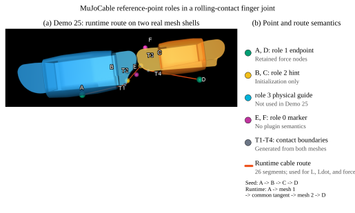

绳路、参考点与 mesh¶
Hint 只选择分支¶
初始化时 role-2 hint 被投影到对应表面，用于选圆柱绕向、mesh seed 面和路线走廊。初始化后它不再是固定物理节点；切入/切出点随几何更新而移动。需要更换初始绕向时，修改 hint 后重新加载模型/初始化。


图中的配色是教学标记，不是插件保留的物理颜色：端点绿色、hint 黄色、guide 青色、普通标记品红色，运行时路线与切点另行绘制。真实项目可自行调整 rgba。
路由模式怎么选¶
模式 |
场景 |
必须知道的限制 |
|---|---|---|
|
固定 site、原生支持的球/圆柱包络、张拉结构 |
site 都是原生路径点，不存在“运行时忽略的 hint”语义 |
|
单/多圆柱滑轮 |
绕行在圆柱侧面；端面触及不是一般端帽绕线问题的完整解 |
|
闭合凸 mesh |
使用较干净的低/中分辨率模型先调试 |
|
闭合非凸障碍 |
受拉无穿透路径可跨凹槽，不应强行贴入所有凹面 |
|
已知支撑走廊，如滚动关节、薄片轮廓 |
走廊/引导假设需与真实机构一致，不等同于任意表面上的全局最短路径保证 |
连续绕过两个表面¶
<config key="route_mode" value="surface"/>
<config key="mesh_route_mode" value="taut_obstacle"/>
<config key="route_tendon" value="seed"/>
<config key="wrap_geoms" value="proximal_route distal_route"/>
seed 点序是 endpoint → proximal_hint → distal_hint → endpoint。两面之间的自由段应由共同的切出/切入位置决定，不是用两个 hint 的直线投影代替公切线。
零间隙或近相切表面会让自由段方向退化。composite_merge_distance 是复合接触处理的距离设置，不是允许绳穿透或容忍刚体相互切入的开关。用较小但可检查的间隙排查初始重叠，再逐步接近真实接触。
为什么它从竖直侧面走了¶
薄片 STL 同时具有前盖、后盖和弧面。hint 位于侧边附近时，初始化可能选到非预期走廊。应检查：
site 与 mesh 是否使用同一尺度和 body 坐标系。
端点是否埋在实体中，或位于另一侧盖板。
hint 是否对应想绕的弧面，而不是一个离端面更近的位置。
是否需要将端点与 hint 移到厚度中面，并用
mesh_guide_axis指明引导平面的法向。
例如 ICRA 字母沿 y 挤出，y=0 是厚度中心，可用 mesh_guide_axis="0 1 0"。这个向量不是空间路径的前进方向。不要任意给很大的 guide weight 来掩盖错误坐标；要同时检查残差、路径分支和受力。
所有 geom 都是绳障碍吗¶
不是。运行时检查已配置的 wrap mesh；它不是“对场景所有 geom 自动做绳碰撞”。跨两个 body 的自由段也要针对相关障碍验证。球、箱、胶囊不是任意指定就能替代圆柱/闭合 mesh 包络类型。
想让驱动索绕过指骨，需要把指骨或对应外表面放进该驱动索的 wrap_geoms，仅让被动韧带包络并不会自动约束旁边的主动索。
准备一个可用 mesh¶
检查闭合性、流形性、退化面、自交、法向、毫米到米的缩放以及相对位姿。视觉 STL 的非流形三角汤不能直接假装成闭合障碍。
MuJoCo 编译 mesh 可能引入自身的中心/惯量坐标变换；插件读取编译后的几何数据。手动调试应以 viewer 中的 site、geom 坐标和实际运行时点为准，而不只看 CAD 软件的原点。
如果用代理，明确它与原始表面的误差及用途。不要把椭球代理的包络宣称为真实非凸 STL 的包络。参见 Faive 案例 和 ICRA 曲面展示。
孔的信息¶
STL/OBJ 可包含拓扑孔，但普通刚体 mesh 碰撞通常使用凸表示。保留真实孔口的刚体碰撞需要另外的建模策略，例如合适的分解或 rigid flex。无质量中心线绳不会自动搜索孔并穿入；用两个真实 role-3 guide 定义入口/出口，见孔口摩擦。